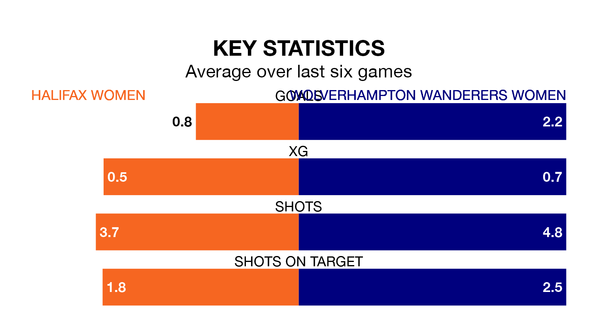

Mid-season relegation candidates Halifax Women face a challenge against high-flying Wolverhampton Wanderers Women on Sunday.
Halifax Women are ninth in the Womens National League – Premier Division North table, and have picked up two wins and five draws in their nine games to date.
Wolverhampton Wanderers, meanwhile, are fourth in the standings with 17 points, having won five and drawn two, and are 12 points behind table-toppers Newcastle United W.
Halifax are in bad form in Womens National League Premier Division North, with no wins and four draws from their last six games.
With three wins and a draw over that period, Wolverhampton Wanderers' form is much better – they have taken 10 points from 18, compared to the home side's four.
With 11 goals in nine games so far this season, Halifax are the league's joint-second-lowest scorers with 1.2 goals per game. But they are conceding fewer than average too, letting in 13 goals at a rate of 1.4 per game.
The visitors, meanwhile, are above average scorers, with 2.1 goals per game, compared to a league average of 1.9. They have conceded 0.8 goals per game.
Halifax's last match was on January 7, a 0-0 draw against Newcastle United Women.
Wolverhampton Wanderers drew 0-0 with Burnley Women last time out, also on January 7.
Updated: 10:50, 10/01/24